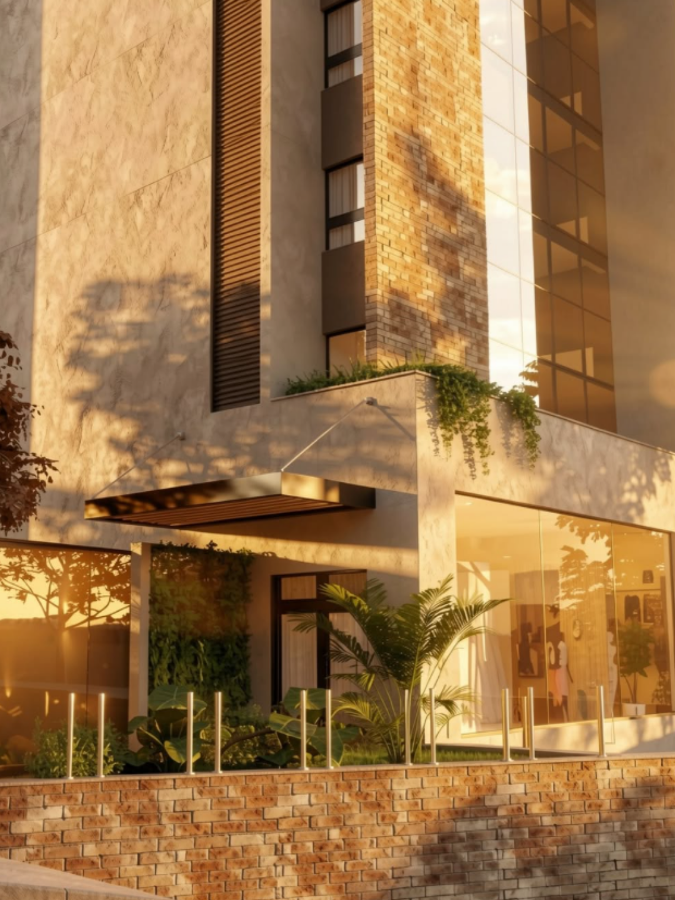
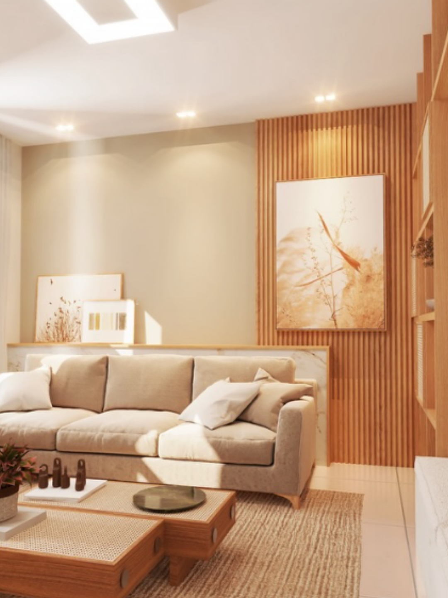

Arquitetura em Lavras, MG
Projetos que continuam fazendo sentido depois de prontos.
A D'Arco Arquitetura desenha residências e espaços comerciais que unem identidade, funcionalidade e execução cuidada — do primeiro esboço à última demão de tinta.
- Anos de atuação
- 35+
- Projetos entregues
- 180
- Cidades atendidas
- 12
- Obras acompanhadas
- 100%
O estúdio
Arquitetura pensada para quem vai viver nela
A D'Arco nasceu em Lavras com um princípio simples: um projeto bom é aquele que resolve a vida de quem mora ou trabalha ali — antes de resolver qualquer tendência.
Trabalhamos lado a lado com cada cliente, do estudo do terreno à escolha do último acabamento, para que cada espaço reflita quem o habita, não um catálogo de referências prontas.
Atendemos projetos residenciais e comerciais em Lavras e região, sempre com acompanhamento próximo — porque arquitetura de verdade se decide na obra, não só na prancheta.
"Um projeto bem-feito não chama atenção para si. Chama atenção para a vida de quem mora nele."

O que fazemos
Do conceito à entrega das chaves
Cada etapa do projeto sob o mesmo olhar, para que nada se perca na tradução entre o desenho e a obra.
-
Projeto arquitetônico
Estudo preliminar, anteprojeto e projeto executivo — com todas as pranchas necessárias para aprovação na prefeitura e para a obra.
-
Reforma e ampliação
Projetos que respeitam o que já existe e resolvem o que não funciona mais, sem demolir memória por capricho.
-
Interiores
Marcenaria, iluminação e acabamentos desenhados junto com a arquitetura — não como uma etapa à parte, pensada depois.
-
Projetos comerciais
Espaços para lojas, escritórios e clínicas que comunicam a marca do cliente antes de qualquer placa na porta.
-
Prévia 3D
Visualização realista do projeto antes da primeira parede erguida, para decidir com segurança o que vai ficar de pé.
-
Acompanhamento de obra
Visitas periódicas e compatibilização com a engenharia, para que o que foi desenhado seja o que efetivamente se constrói.
Como trabalhamos
Uma jornada clara, do primeiro encontro à entrega
-
Conversa inicial
Entendemos o terreno, a rotina de quem vai usar o espaço e o orçamento disponível, antes de desenhar qualquer linha.
-
Conceito
Apresentamos a ideia central do projeto: volumetria, organização dos ambientes e a lógica que vai guiar todas as decisões seguintes.
-
Desenvolvimento
Detalhamos plantas, cortes, fachadas e especificações técnicas até o projeto estar pronto para aprovação e para a obra.
-
Aprovação e execução
Cuidamos da documentação junto à prefeitura e acompanhamos o início da construção lado a lado com a equipe de obra.
-
Entrega
Vistoria final, ajustes de acabamento e entrega das chaves — com o projeto original preservado do papel à realidade.
Portfólio
Projetos que já saíram do papel
Por que a D'Arco
Atenção que não termina na entrega do projeto
-
Projeto sob medida
Cada projeto parte do terreno e da rotina de quem vai usar o espaço — não de uma planta padrão adaptada depois.
-
Acompanhamento na obra
Não entregamos só um PDF. Acompanhamos a execução para que o projeto aprovado seja o que realmente se constrói.
-
Prévia realista antes de construir
Visualização 3D do projeto, para decidir com segurança antes de qualquer investimento em obra.
-
Atendimento local, em Lavras
Estúdio presente na região, com visitas ao terreno e reuniões presenciais quando o projeto pede.
Quem já construiu com a gente
"[Espaço reservado para depoimento real de um cliente da D'Arco — uma frase específica sobre o processo ou o resultado costuma convencer mais do que um elogio genérico.]"
[Nome do cliente]
[Tipo de projeto — ex: Residência em Lavras, MG]
Vamos desenhar o seu próximo espaço?
Conte um pouco sobre o terreno e a ideia que você tem em mente. A partir daí, marcamos uma conversa sem compromisso.
Falar com a D'Arco